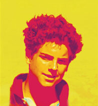
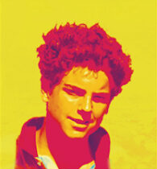
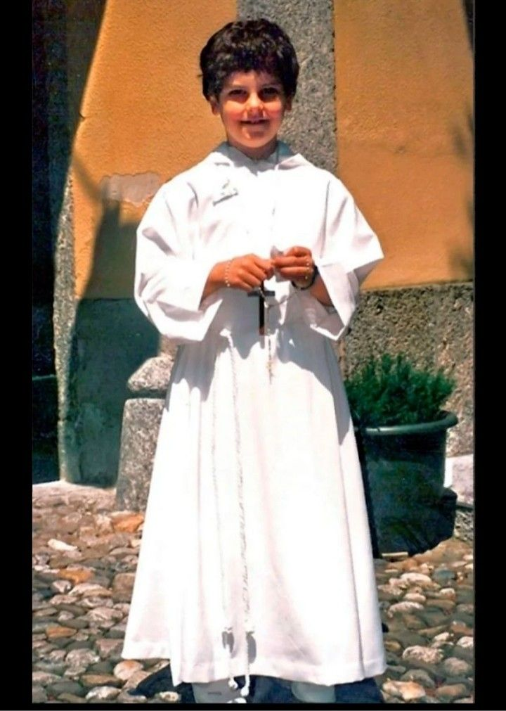

Imagen

1998: Primera Comunión
El 16 de junio de 1998, Carlo, recién cumplidos los 7 años, recibe la Primera Comunión en el convento de las Monjas Eremitas de San Ambrosio, en Perego. Este momento marca un paso importante en su vida espiritual, ya que desde pequeño demuestra una gran devoción y amor por la Eucaristía. La ceremonia, rodeada de familiares y amigos, refuerza en él los valores de la fe y la espiritualidad que acompañarán todas sus acciones, mostrando desde temprano un profundo respeto por las tradiciones religiosas y un sincero deseo de acercarse a Dios.